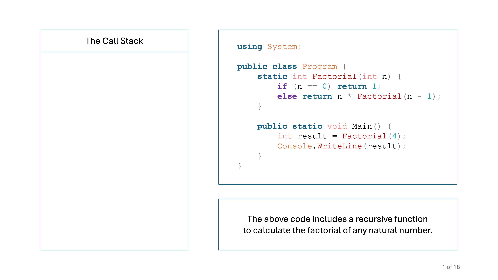
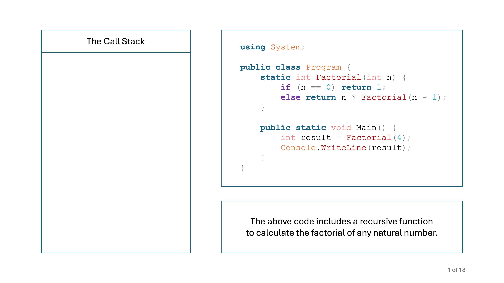

GCSE Link: None
 Recursion is when a subroutine calls itself.
Recursion is when a subroutine calls itself.
Example 1 shows an example of recursion in C#.
 Example 1
Example 1
static int Factorial(int n) {
if (n == 0) return 1;
else return n * Factorial(n - 1);
}
In this example, the Factorial function will keep calling itself until it reaches 0.
 The call stack is a data structure which stores all the subroutines which are running in a program.
The call stack is a data structure which stores all the subroutines which are running in a program.
Diagram 1 shows a step-by-step guide to how the call stack works in a recursive program. Use the arrows to navigate.
 Diagram 1
Diagram 1
 


 Write a recursive C# function to return the nth Fibonacci number (0-indexed). The sequence starts
Write a recursive C# function to return the nth Fibonacci number (0-indexed). The sequence starts 0, 1, 1, 2, 3, 5, 8, 13, ...
static int Fibonacci(int n) {
if (n < 2) return n;
else return Fibonacci(n-1) + Fibonacci(n-2);
}